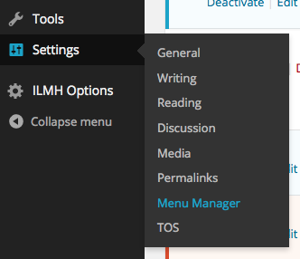
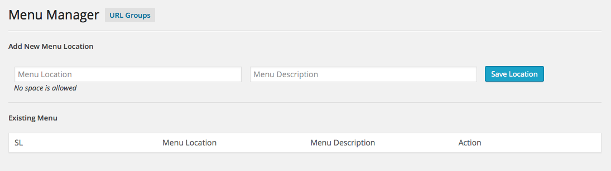
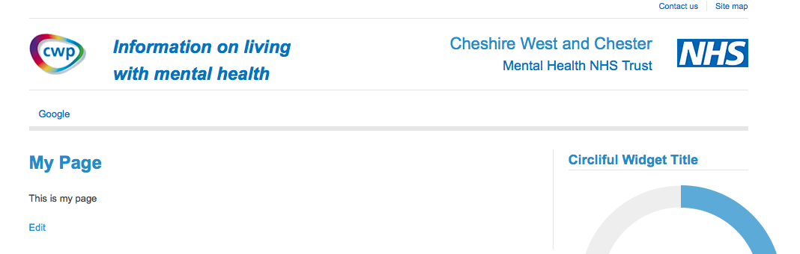

-
After activating the plugin, you will see a new menu in Dashboard > Settings > Menu Manager
 -
The menu manager page will be appeared
 -
Create new menu location from here

-
Go to Appearances > Menus and you will see your new location in there.
-
Create your new menu and set the new location for it.
-
Create a page/post and replace the menu in meta box
-
See the output:
Before changing:
After chaning:
 -
URL Groups: Go to menu manager and click on URL groups:
-
Create new group:
-
Customize a group and select menu replace ment rule.
- Enjoy!